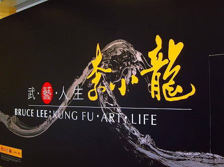
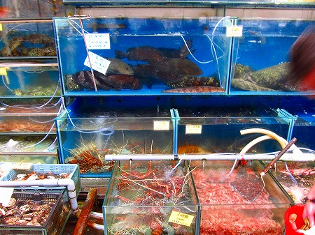
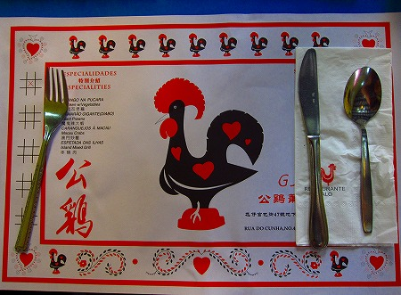
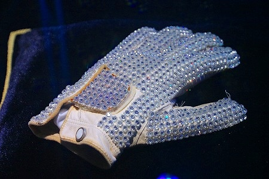
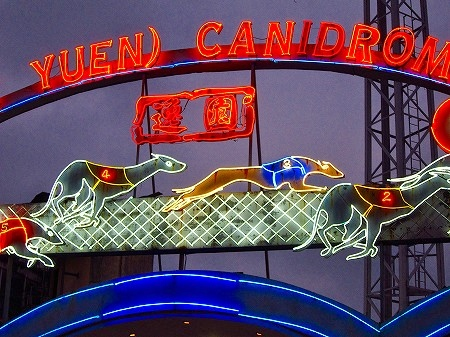
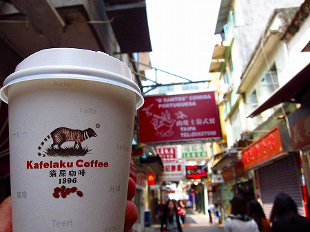

東洋の真珠、香港である。
6年ぶりの香港、今回も短期の滞在である。
しかも今回の香港訪問の最大のお目当ては文物博物館において開催されていた
ブルース・リー展。

さらに第二の目的は離島での
海鮮三昧。

さらにさらに第三の目的はマカオに渡っての
クレオール料理三昧。

さらにさらにさらに第四の目的はマカオの
マイケル・ジャクソンミュージアム訪問。

さらにさらにさらにさらに第五の目的はマカオ名物
ドッグレースで一攫千金。

さらにさらにさらにさらにさらに第六の目的はマカオの動物園にて
パンダちゃんに謁見。
さらにさらにさらにさらにさらにさらに第七の目的は
ジャコウネコの糞から作られたコーヒーを賞味。

というハードスケジュール。
…小嶋よ。オマエまさか今回はお寺ナシ、とかじゃなかろうな…
と疑念をお持ちのダンナ！
心配御無用！
ちゃあんと押さえてありますって。
とはいえ今回はあまり時間が割けなかったのも事実。
あれ？お寺にはあまり行ってないかも。
しかも仏教寺院は1箇所だけだったかも…。
と、とりあえず見てけろ！
林村 許願樹
銅鑼湾 打小人
西貢区 將軍澳華人永遠墳場
荃湾 西方寺
荃湾 圓玄学院